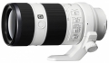

器材库 > 35mm画幅AF变焦镜头 > FE 70-200/4 G OSS

详细规格
镜头类型
远摄变焦镜头
发布日期
2013-10-16
厂家推荐价格
165,900.00 （日元）
焦距
70mm-200mm
最大光圈
f/4
最小光圈
f/22
视角（对角）
全幅 34ﾟ-12.5° / APS-C 约23ﾟ-8ﾟ
镜头结构
21片/15组
非球面镜片
2片
光圈叶片
9片
最近对焦距离
约100-150cm
最大放大倍率
0.13倍
滤镜口径
72mm
镜头卡口
Sony E
防抖
是
颜色
黑色
尺寸
80×175mm
重量
840g
jerysys2018-03-22 11:064.83 分
操作性 5.00耐用性 5.00性价比 5.00解像力 5.00色彩还原 4.00机械结构 5.00
topzhao20012018-02-13 10:393.75 分
操作性 4.50耐用性 4.50性价比 2.50解像力 5.00色彩还原 2.00机械结构 4.00
ItachiUchiha2018-02-08 10:135 分
操作性 5.00耐用性 5.00性价比 5.00解像力 5.00色彩还原 5.00机械结构 5.00
无忌社长2016-05-17 15:325 分
操作性 5.00耐用性 5.00性价比 5.00解像力 5.00色彩还原 5.00机械结构 5.00
liusm12342016-03-07 22:114.83 分
操作性 5.00耐用性 4.00性价比 5.00解像力 5.00色彩还原 5.00机械结构 5.00
godchaos2015-05-18 23:124.67 分
操作性 4.50耐用性 5.00性价比 4.50解像力 4.00色彩还原 5.00机械结构 5.00
wingszero2014-08-05 17:34
a60002014-05-02 22:264.75 分
操作性 5.00耐用性 5.00性价比 4.00解像力 4.50色彩还原 5.00机械结构 5.00
产品图 / 样片
FE 70-200/4 G OSS
评测 / 相关文章
- 微单中的小小白 索尼FE 70-200mm F4评测 （存档）
- ［试用］索尼FE 70-200/4 G OSS俱乐部 （存档）
- ［试用］索尼FE*镜头CLUB 感受FE的新力量 （存档）
- ［试用］索尼FE 70-200/4 G OSS开箱及试镜 （存档）
- ［资讯］除了全幅微单还有70-200mm G II （存档）
- ［资讯］全面点评索尼新品镜头 （存档）
- ［资讯］索尼秋季新品发布会现场集锦 （存档）
- ［资讯］关于索尼全幅微单更多消息 （存档）